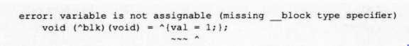
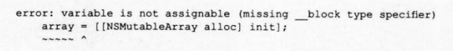

如果将值赋值给 Block中截获的自动变量,就会产生编译错误
int val =0;
void (^blk)(void)=^{val =1;}
该源代码会产生以下编译错误:
那么截获 Objective-C对象,调用变更该对象的方法也会产生编译错误吗?
id array = [[NSMutableArray alloc] init];
void (^blk)(void)=^{
id obj =[[NSObject alloc] init];
[array addobject: obj];
}
这是没有问题的,而向截获的变量aray赋值则会产生编译错误
该源代码中截获的变量值
为 NSMutableArray类的对象
如果用C语言来描述,即是截获 NSMutableArray类对象用的结构
体实例指针
虽然赋值给截获的自动变量aray的操作会产生编译错误,但使用截获的值却不会
有任何问题
下面源代码向截获的自动变量进行赋值,因此会产生编译错误
id array =[[NSMutableArray alloc] init];
void (^blk)(void)=^{
array = [[NSMutableArray alloc] init];
};

这种情况下,需要给截获的自动变量附加__bock说明符
__block id array = [[NSMutableArray alloc] init];
viod (^blk)(void) = ^{
array= [[NSMutableArray alloc] init]:
}
另外,在使用C语言数组时必须小心使用其指针
源代码示例如下
const char text[] = "hello";
void (^blk)(void)=^{
printf("%c
", text[2]);
}
只是使用C语言的字符串字面量数组,而并没有向截获的自动变量赋值,因此看似没有问
题
但实际上会产生以下编译错误:
这是因为在现在的 Blocks中,截获自动变量的方法并没有实现对C语言数组的截获
这时,
使用指针可以解决该问题
const char *text = "hello";
void (^blk)(void)=^{
printf("%c
", text[2])
}